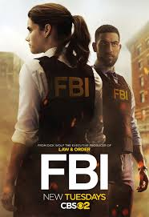
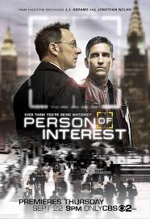

CIA
Sigue una asociación entre un agente del FBI y un agente de la CIA
que trabajan juntos en un equipo de trabajo clandestino para prevenir el
terrorismo doméstico en Nueva York.
- Género:Acción, Aventura, Crimen, Drama, Misterio y Suspense
- Año: 2026
- Duración:1 temporada
- Director:Jon Cassar, Ken Girotti, Norberto Barba y Jean de Segonza
- Productores/as:Denis Hamill, Ben Dubash y Ash Steele
- Calificación general: 6.2/10
- Clasificación por edad: +18
- Plataformas:CBS studio
Tráiler
REPARTO
CIA
LINDA HOGAN
NATALEE LINEZ
NEGAR ZADEGAN
JEREMY SISTO
RESEÑAS DESTACADAS
Calificación: 7.0 / 10
Manoj382 dice:
Buen inicio, pero falta fuerza.
"Sin una buena escritura, ni siquiera Tom Ellis puede salvar la serie.
Los personajes parecen poco desarrollados y la trama necesita más tensión.
Aun así, tiene potencial si se ajusta el guion."
Calificación: 7.0 / 10
Koinonia92 dice:
Potencial dentro del universo FBI.
"El debut muestra potencial, podría ser un buen complemento a la franquicia
*FBI* si se le da tiempo. La química entre los protagonistas funciona,
pero falta más desarrollo en los secundarios."
Calificación: 6.0 / 10
Lindagore dice:
El FBI demasiado estereotípico.
"El personaje del FBI es demasiado estereotípico y poco atractivo.
Solo Tom Ellis sostiene la serie con su carisma.
Necesita más originalidad en los guiones."
Calificación: 6.0 / 10
MezzanineGirl dice:
La escritura floja le resta impacto.
"La escritura es floja, terminé volviendo a *Person of Interest*.
Quizás mejore con el tiempo, pero por ahora no engancha lo suficiente."
Calificación: 3.0 / 10
Mjschiller dice:
Guion aburrido y personajes planos.
"El guion es aburrido, los personajes no son carismáticos.
No vale la pena seguirla por ahora.
Esperaba mucho más de una producción de Dick Wolf."
RELACIONADOS

FBI (SERIE)
Calificación: 7.1/10
DURACION: 6 temporadas
NCIS: ORIGINS
Calificación: 7.5/10
DURACION: 1 temporada
TRACKER
Calificación: 7.1/10
DURACION: 1 temporada
